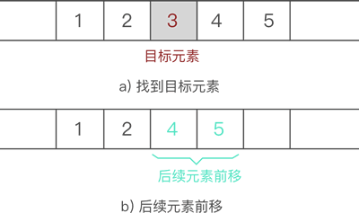
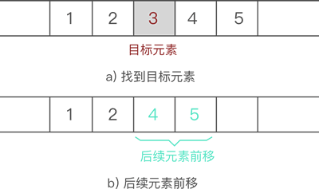

顺序表的基本操作（C语言详解版）
我们学习了顺序表及初始化的过程，本节学习有关顺序表的一些基本操作，以及如何使用 C 语言实现它们。
虽然数据元素插入顺序表中的位置有所不同，但是都使用的是同一种方式去解决，即：通过遍历，找到数据元素要插入的位置，然后做如下两步工作：
例如，在
因此，顺序表插入数据元素的 C 语言实现代码如下：

图 4 顺序表删除元素的过程示意图
因此，顺序表删除元素的 C 语言实现代码为：
这里，我们选择顺序查找算法，具体实现代码为：
顺序表更改元素的 C 语言实现代码为：
以上是顺序表使用过程中最常用的基本操作，这里给出本节完整的实现代码：
顺序表插入元素
向已有顺序表中插入数据元素，根据插入位置的不同，可分为以下 3 种情况：- 插入到顺序表的表头；
- 在表的中间位置插入元素；
- 尾随顺序表中已有元素，作为顺序表中的最后一个元素；
虽然数据元素插入顺序表中的位置有所不同，但是都使用的是同一种方式去解决，即：通过遍历，找到数据元素要插入的位置，然后做如下两步工作：
- 将要插入位置元素以及后续的元素整体向后移动一个位置；
- 将元素放到腾出来的位置上；
例如，在
{1,2,3,4,5} 的第 3 个位置上插入元素 6，实现过程如下：
-
遍历至顺序表存储第 3 个数据元素的位置，如图 1 所示：

图 1 找到目标元素位置 -
将元素 3 以及后续元素 4 和 5 整体向后移动一个位置，如图 2 所示：

图 2 将插入位置腾出 -
将新元素 6 放入腾出的位置，如图 3 所示：

图 3 插入目标元素
因此，顺序表插入数据元素的 C 语言实现代码如下：
//插入函数，其中，elem为插入的元素，add为插入到顺序表的位置
table addTable(table t,int elem,int add)
{
//判断插入本身是否存在问题（如果插入元素位置比整张表的长度+1还大（如果相等，是尾随的情况），或者插入的位置本身不存在，程序作为提示并自动退出）
if (add>t.length+1||add<1) {
printf("插入位置有问题\n");
return t;
}
//做插入操作时，首先需要看顺序表是否有多余的存储空间提供给插入的元素，如果没有，需要申请
if (t.length==t.size) {
t.head=(int *)realloc(t.head, (t.size+1)*sizeof(int));
if (!t.head) {
printf("存储分配失败\n");
return t;
}
t.size+=1;
}
//插入操作，需要将从插入位置开始的后续元素，逐个后移
for (int i=t.length-1; i>=add-1; i--) {
t.head[i+1]=t.head[i];
}
//后移完成后，直接将所需插入元素，添加到顺序表的相应位置
t.head[add-1]=elem;
//由于添加了元素，所以长度+1
t.length++;
return t;
}
注意，动态数组额外申请更多物理空间使用的是 realloc 函数。并且，在实现后续元素整体后移的过程，目标位置其实是有数据的，还是 3，只是下一步新插入元素时会把旧元素直接覆盖。顺序表删除元素
从顺序表中删除指定元素，实现起来非常简单，只需找到目标元素，并将其后续所有元素整体前移 1 个位置即可。后续元素整体前移一个位置，会直接将目标元素删除，可间接实现删除元素的目的。
例如，从{1,2,3,4,5} 中删除元素 3 的过程如图 4 所示：

图 4 顺序表删除元素的过程示意图
因此，顺序表删除元素的 C 语言实现代码为：
table delTable(table t,int add){
if (add>t.length || add<1) {
printf("被删除元素的位置有误\n");
return t;
}
//删除操作
for (int i=add; i<t.length; i++) {
t.head[i-1]=t.head[i];
}
t.length--;
return t;
}
顺序表查找元素
顺序表中查找目标元素，可以使用多种查找算法实现，比如说二分查找算法、插值查找算法等。这里，我们选择顺序查找算法，具体实现代码为：
//查找函数，其中，elem表示要查找的数据元素的值
int selectTable(table t,int elem){
for (int i=0; i<t.length; i++) {
if (t.head[i]==elem) {
return i+1;
}
}
return -1;//如果查找失败，返回-1
}
顺序表更改元素
顺序表更改元素的实现过程是：- 找到目标元素；
- 直接修改该元素的值；
顺序表更改元素的 C 语言实现代码为：
//更改函数，其中，elem为要更改的元素，newElem为新的数据元素
table amendTable(table t,int elem,int newElem){
int add=selectTable(t, elem);
t.head[add-1]=newElem;//由于返回的是元素在顺序表中的位置，所以-1就是该元素在数组中的下标
return t;
}
以上是顺序表使用过程中最常用的基本操作，这里给出本节完整的实现代码：
#include <stdio.h>
#include <stdlib.h>
#define Size 5
typedef struct Table{
int * head;
int length;
int size;
}table;
table initTable(){
table t;
t.head=(int*)malloc(Size*sizeof(int));
if (!t.head)
{
printf("初始化失败\n");
exit(0);
}
t.length=0;
t.size=Size;
return t;
}
table addTable(table t,int elem,int add)
{
if (add>t.length+1||add<1) {
printf("插入位置有问题\n");
return t;
}
if (t.length>=t.size) {
t.head=(int *)realloc(t.head, (t.size+1)*sizeof(int));
if (!t.head) {
printf("存储分配失败\n");
}
t.size+=1;
}
for (int i=t.length-1; i>=add-1; i--) {
t.head[i+1]=t.head[i];
}
t.head[add-1]=elem;
t.length++;
return t;
}
table delTable(table t,int add){
if (add>t.length || add<1) {
printf("被删除元素的位置有误\n");
return t;
}
for (int i=add; i<t.length; i++) {
t.head[i-1]=t.head[i];
}
t.length--;
return t;
}
int selectTable(table t,int elem){
for (int i=0; i<t.length; i++) {
if (t.head[i]==elem) {
return i+1;
}
}
return -1;
}
table amendTable(table t,int elem,int newElem){
int add=selectTable(t, elem);
t.head[add-1]=newElem;
return t;
}
void displayTable(table t){
for (int i=0;i<t.length;i++) {
printf("%d ",t.head[i]);
}
printf("\n");
}
int main(){
table t1=initTable();
for (int i=1; i<=Size; i++) {
t1.head[i-1]=i;
t1.length++;
}
printf("原顺序表：\n");
displayTable(t1);
printf("删除元素1:\n");
t1=delTable(t1, 1);
displayTable(t1);
printf("在第2的位置插入元素5:\n");
t1=addTable(t1, 5, 2);
displayTable(t1);
printf("查找元素3的位置:\n");
int add=selectTable(t1, 3);
printf("%d\n",add);
printf("将元素3改为6:\n");
t1=amendTable(t1, 3, 6);
displayTable(t1);
return 0;
}
程序运行结果为：
原顺序表：
1 2 3 4 5
删除元素1:
2 3 4 5
在第2的位置插入元素5:
2 5 3 4 5
查找元素3的位置:
3
将元素3改为6:
2 5 6 4 5
关注公众号「站长严长生」，在手机上阅读所有教程，随时随地都能学习。内含一款搜索神器，免费下载全网书籍和视频。

微信扫码关注公众号